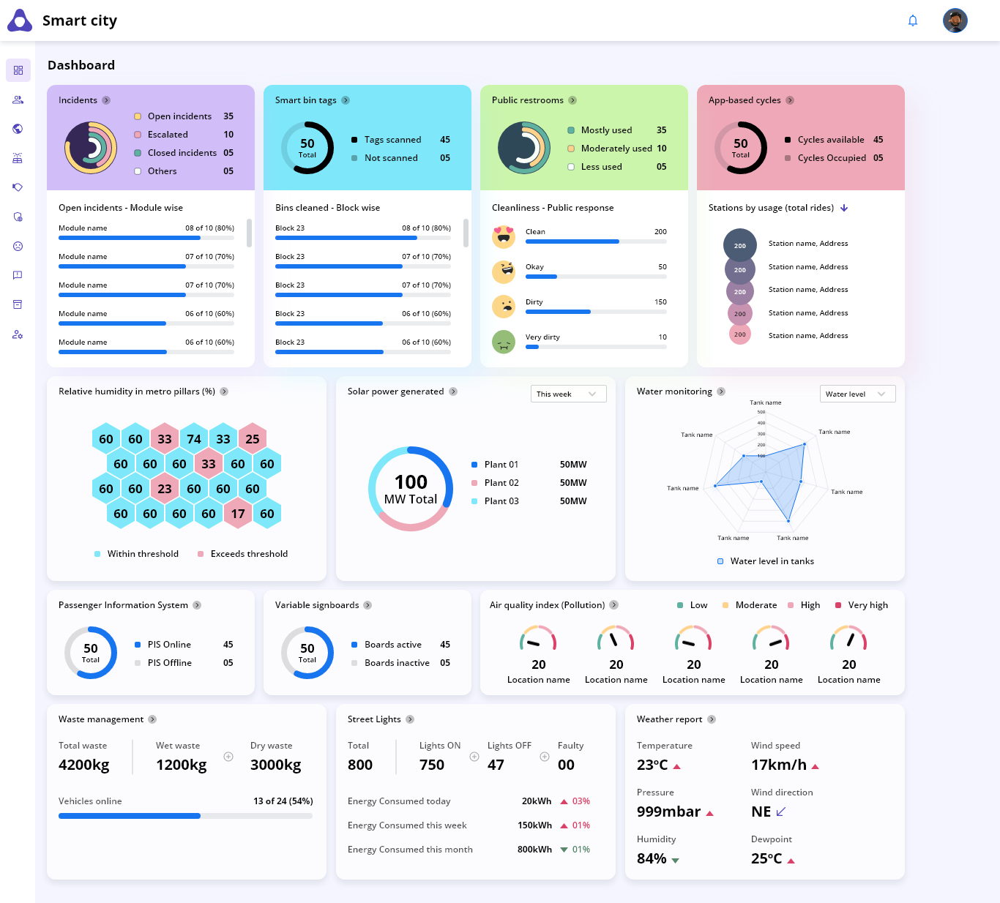
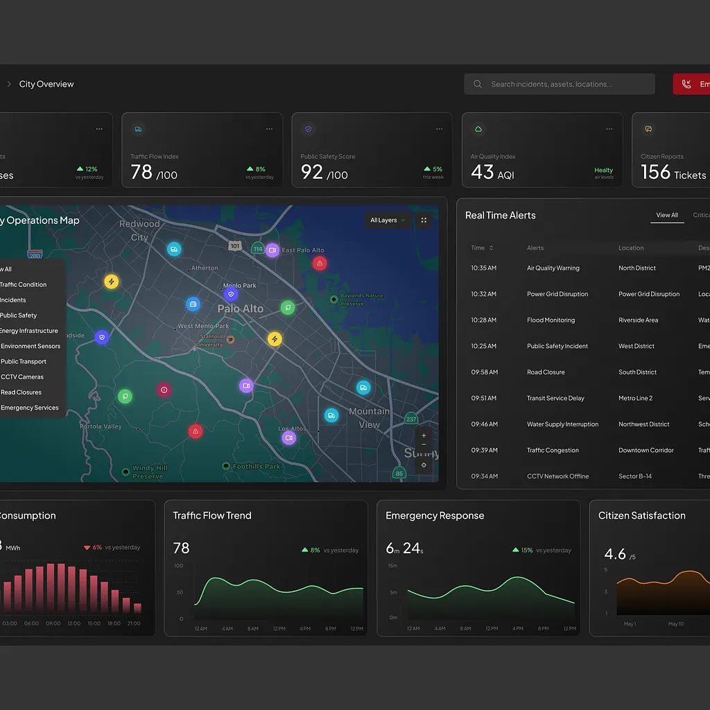

Indicadores da cidade
Números atualizados direto do banco de dados a cada visita.

Monitoramento urbano em um só lugar
Painéis como este são a referência do Bairro em Dia: dados da cidade organizados para que a gestão pública priorize o que mais pesa no dia a dia.
Como funciona
- 1
Registre
Preencha o formulário com foto, descrição e endereço do problema.
- 2
Receba o protocolo
Cada ocorrência ganha um número único para consulta.
- 3
Acompanhe
Veja a linha do tempo: pendente, em análise, em andamento e resolvida.
- 4
Veja a mudança
O bairro melhora e todos podem conferir o resultado.

Tecnologia aplicada à gestão urbana: mapa, alertas e indicadores em tempo real.
O que você pode registrar
Sete categorias cobrem os problemas mais comuns nas ruas e praças.
Buracos nas ruas
Asfalto danificado e crateras que oferecem risco.
Iluminação pública
Postes apagados ou lâmpadas queimadas.
Limpeza urbana
Acúmulo de lixo e descarte irregular de resíduos.
Esgoto a céu aberto
Esgoto exposto e riscos à saúde.
Vazamentos
Água escorrendo pelas vias e calçadas.
Praças públicas
Bancos, brinquedos e áreas verdes sem cuidado.
Calçadas danificadas
Buracos e desníveis que impedem a passagem.